Linear Regression
NRES 710
Fall 2022
Download the R code for this lecture!
To follow along with the R-based lessons and demos, right (or command) click on this link and save the script to your working directory
Overview: Linear Regression
Classical linear regression involves testing for a relationship between a continuous response variable (dependent variable) and a continuous predictor variable (independent variable).
You can have multiple explanatory variables (multiple linear regression). But we will focus on simple linear regression here (i.e., only one predictor variable).
The null hypothesis is that there is no relationship between the response variable and the predictor variable in your population of interest. That is, values of your predictor variable are useless for predicting your response variable.
Simple example
Imagine we are testing for a relationship between the brightness of artificial lighting on coastal beaches (e.g., from hotels and other forms of development) and the total number of hatchling sea turtles per nest that successfully make it to the ocean.

Population: All nests deposited on coastal beaches across
the region of interest.
Parameter(s): The relationship between the mean number of
successful hatchlings per nest and the brightness of artificial
lighting.
Sample: All monitored nests (hopefully a representative sample
of the population)
Statistic(s): Slope and intercept of the linear relationship
between the measured response variable (number of successful
ocean-arrivers per nest) and the predictor variable (brightness of
artificial lighting)
Some more specifics!
The process model
We assume there is some true model out there describing the expected (mean) value of our response variable y as a linear function of our predictor variable x:
\(E(y)= \beta_0 + \beta_1\cdot x\)
To interpret this equation: the true mean of our response variable (\(E(y)\)) is computed by taking the true intercept (\(\beta_0\)) and adding the product of the true slope term (\(\beta_1\)) and our predictor variable. This is just another way of saying that the expected value of the response variable is computed as a linear function of the predictor variable. \(\beta_0\) and \(\beta_0\) are both parameters that we wish to estimate!
The noise
To complete the thought, we also assume that there is some “noise” in the system. The “noise” term in regression and ANOVA is also known as the error. Specifically, we assume that the noise is normally distributed with mean of zero and standard deviation of \(\sigma\).
Mathematically, we are assuming that our data/sample was generated from this process:
\(y= \beta_0 + \beta_1\cdot x + \epsilon\)
OR:
\(y = E(y) + \epsilon\)
WHERE:
\(\epsilon \equiv Normal(0, \sigma)\)
This is actually the same assumption we made for a one-sample t-test!
For a t-test, we assumed that there is a true population mean \(\mu\) (equivalent to \(E(y)\)) and that the true “noise” is normally distributed with standard deviation of \(\sigma\).
As with a t-test, where we can only approximate the true population mean by computing the sample mean, we can only approximate the linear relationship between our response and predictor variables:
\(\bar{y} = \hat{B_0} + \hat{B_0}\cdot x\)
Just like any other statistical test, we assume that our observed linear relationship (defined by coefficients \(\hat{B_0}\) and \(\hat{B_1}\)) is just one of many such possible relationships that could have been derived from random sampling from our population of interest. If we collected a different sample, we would get a different linear relationship.
NOTE: in linear regression we are generally far more interested in the slope of the linear relationship (\(\hat{B_1}\) rather than the intercept). So for now, we assume \(\hat{B_1}\) (slope between response and predictor, computed from the sample) is the main test statistic of interest!
So.. what is the sampling distribution for our test statistic \(\hat{B_1}\) under the null hypothesis in this case? Well, the answer is that it (when converted to units of standard error) is t-distributed! Let’s look into this a bit more.
Regression and t-tests- the link!
Our discussion of t-tests actually rolls us straight into linear regression. Why? How?
In a one-sample t-test we are interested in estimating the true population mean, and we assume that our t-statistic (i.e., deviation of the sample mean from the null-hypothesis mean, in units of standard error) is t-distributed.
What is the null hypothesis of a linear regression? (Slope = 0 - that is, the true relationship is zero).
So already we are seeing a bit of a similarity.
In a t-test we assume that the population mean is equal to the null mean and that the data are normally distributed. We could write this as (using regression notation):
\(y = \beta_0 + \epsilon\)
WHERE:
\(\epsilon \equiv Normal(0, \sigma)\)
In the above equation, \(\beta_0\) represents the population mean under the null hypothesis.
We approximate our population mean using the sample mean \(\bar{\beta_0}\) (formerly known as \(\bar{x}\)) and we use the CLT and other statistical theories to show that the t-statistic:
\(t = \frac{\bar{\beta_0}-\beta_0}{StdErr(\beta_0)}\)
Is t-distributed with df computed as the sample size minus the number of parameters estimated in the model (there is only one estimated parameter- the sample mean \(\bar{\beta_0}\)).
In linear regression we assume that the mean of our response is determined by two parameters- the intercept and the slope (linear relationship with the predictor variable). The null hypothesis (usually) is that the true mean is defined only by the intercept term (overall mean response value) and there is no relationship with the predictor variable (slope term is equal to zero).
The slope term of the linear regression can be computed as:
\(\hat{\beta_1} = \frac{\sum_{i=1}^{n}{(x_i-\bar{x})(y_i-\bar{y})}}{\sum_{i-1}^{n}{(x_i-\bar{x})^2}}\)
And the intercept term can be computed as:
\(\hat{\beta_0} = \bar{y} - \beta_1*\bar{x}\)
Simple linear regression models (that is, the slope and intercept terms above) are fitted using “least squares”. The best fit model minimizes the sum of the squared residuals. DRAW THIS OUT.
The standard error of the slope term (as opposed to the standard error of the mean) is computed as:
\(std.err_{\hat{\beta_1}} = \sqrt{\frac{\frac{1}{n-2}\sum_{i=1}^n{\hat\epsilon_i^2}}{\sum_{i=1}^n{(x_i-\bar{x})^2}}}\)
Where the \(\hat\epsilon_i\) refers to the residual errors.
We can then compute a t-statistic for the slope term (difference from the sample slope term and the null slope term in units of standard error):
\(t=\frac{\hat{\beta_1}-\beta_{1null}}{std.err_{\hat{\beta_1}}}\)
Just like with the t-test, we assume that this t-statistic is t-distributed under the null hypothesis. This time the degrees of freedom is 2 less than the sample size (since computing the residual error requires computing two parameters: mean and slope).
Simple linear regression: examples
Okay let’s consider the sea turtle example from the beginning of lecture:
Imagine we are testing for a relationship between the brightness of artificial lighting on coastal beaches of the eastern USA (e.g., from hotels and other forms of development) and the total number of hatchling sea turtles per nest that successfully make it to the ocean.
First we will simulate some data under a known process model (don’t worry if you don’t totally follow this data simulation code):
# Examples --------------------------------------
eggs.per.nest <- 100
n.nests <- 15
light <- rnorm(n.nests,50,10) # make up some light pollution values (predictor var)
probsucc <- function(light){ # egg success as a function of light pollution
plogis(1.5-0.01*light)
}
hatchlings.successful <- rbinom(n.nests,eggs.per.nest,probsucc(light)) # determine number of successful eggs (response var)
#curve(probsucc,0,100)
plot(hatchlings.successful~light) # plot the data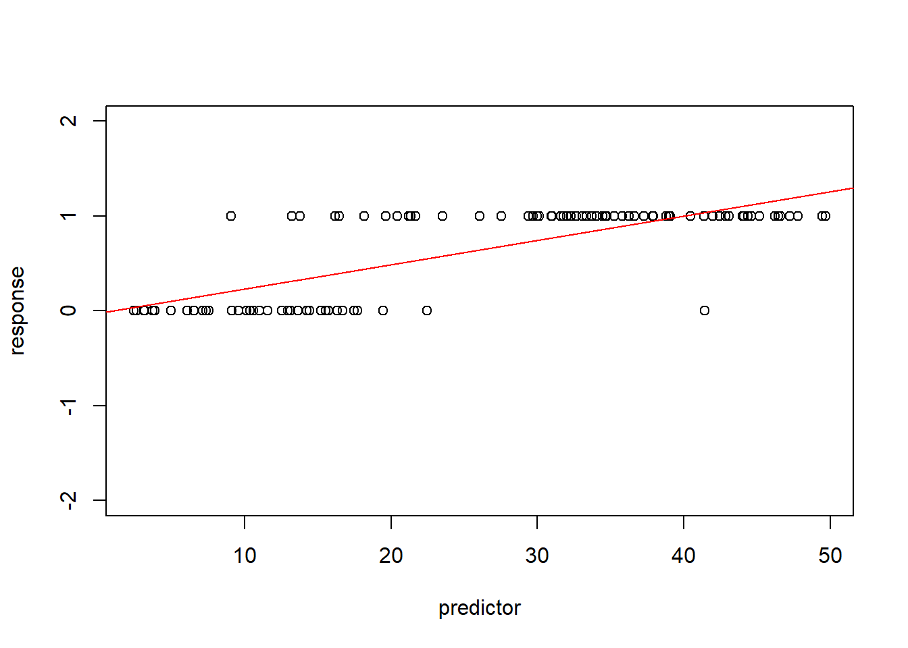
Now that we have data, let’s run a simple linear regression analysis! This one time we will compute the statistics directly from the data without using R functions.
slope <- sum((light-mean(light))*(hatchlings.successful-mean(hatchlings.successful)))/sum((light-mean(light))^2)
intercept <- mean(hatchlings.successful) - slope*mean(light)
exp.successful <- intercept+slope*light # expected number of eggs for each observation
residuals <- hatchlings.successful-exp.successful
stderr <- sqrt(((1/(n.nests-2))*sum(residuals^2))/(sum((light-mean(light))^2))) # standard error
t.stat <- (slope-0)/stderr # t statistic
pval <- 2*pt(t.stat,n.nests-2) # p valueA much easier approach is to use R’s lm() function:
# use lm() function instead (easy way!)
model <- lm(hatchlings.successful~light)
summary(model) # get the same t stat and p-value hopefully!##
## Call:
## lm(formula = hatchlings.successful ~ light)
##
## Residuals:
## Min 1Q Median 3Q Max
## -7.691 -4.095 1.051 3.135 9.201
##
## Coefficients:
## Estimate Std. Error t value Pr(>|t|)
## (Intercept) 87.390 6.363 13.734 4.07e-09 ***
## light -0.252 0.128 -1.969 0.0706 .
## ---
## Signif. codes: 0 '***' 0.001 '**' 0.01 '*' 0.05 '.' 0.1 ' ' 1
##
## Residual standard error: 5.116 on 13 degrees of freedom
## Multiple R-squared: 0.2298, Adjusted R-squared: 0.1705
## F-statistic: 3.878 on 1 and 13 DF, p-value: 0.07062And we can plot the regression line on top of a scatterplot:
# plot regression line!
plot(hatchlings.successful~light) # plot the data
abline(intercept,slope,col="blue")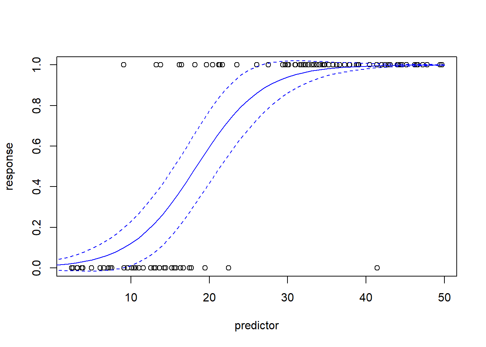
Of course, we can’t end with a single regression line, since there is sampling error associated with our best-fit regression line. There is error associated with the intercept and there is error associated with the slope term. To do this in r, we can use the ‘predict’ function:
# add confidence interval on the regression line
newdata <- data.frame( # make a data frame containing the light values we want to make predictions for (spanning the range of light values in our data)
light = seq(20,80,1)
)
my.predict <- predict(model, newdata = newdata, interval = "confidence") # 95% conf int by default
plot(hatchlings.successful~light) # plot the data
abline(intercept,slope,col="blue")
lines(newdata$light,my.predict[,"upr"],col="red",lty=2) # add upper bound
lines(newdata$light,my.predict[,"lwr"],col="red",lty=2) # add lower bound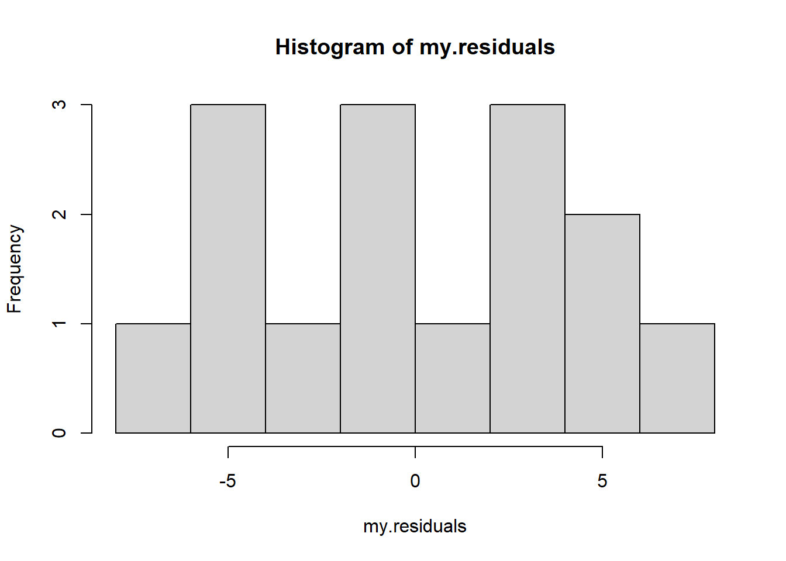
This confidence interval loosely represents the range of plausible best-fit lines we could fit if we were to gather multiple alternative datasets. If some of the plausible lines that fit within the upper and lower bounds of the confidence interval on the regression line have a positive slope and others have a negative slope, we might remain unconvinced that the relationship between the response and predictor variable is ‘statistically significant’!
Q: take a couple minutes to run a simple linear
regression of tree Volume as a function of tree Girth using the built-in
trees dataset.
Assumptions of simple linear regression
Normal error distribution
Simple linear regression assumes that the model residuals are normally distributed.
Let’s look at the residuals for our sea turtle example:
my.intercept <- model$coefficients["(Intercept)"]
my.slope <- model$coefficients["light"]
expected.vals <- my.intercept+my.slope*light
my.residuals <- hatchlings.successful-expected.vals
my.residuals## [1] -6.38350623 1.48524346 9.20122195 -7.69060240 3.39148668 1.05121837
## [7] 2.46384427 -0.02049669 2.87815053 4.10643391 -4.14153963 -4.04784268
## [13] -2.07932376 5.88339043 -6.09767819### alternative way of getting residuals (best way!)
my.residuals2 <- model$residuals
### alternative way using predict function
my.residuals3 <- hatchlings.successful-predict(model)
### histogram of residuals
hist(my.residuals)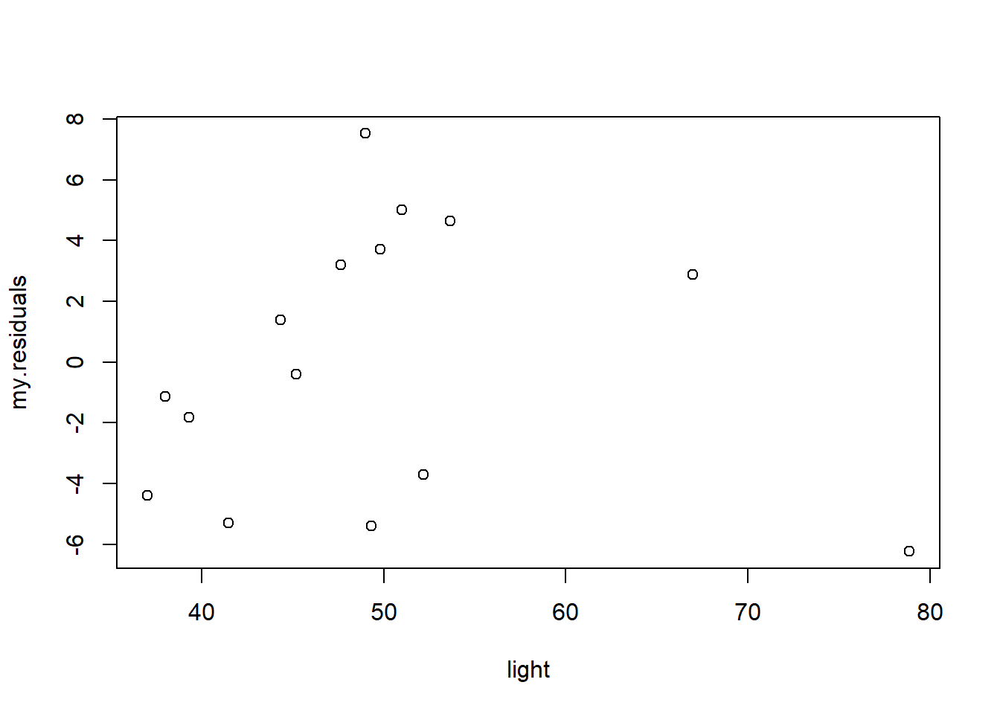
### test for normality
qqnorm(my.residuals)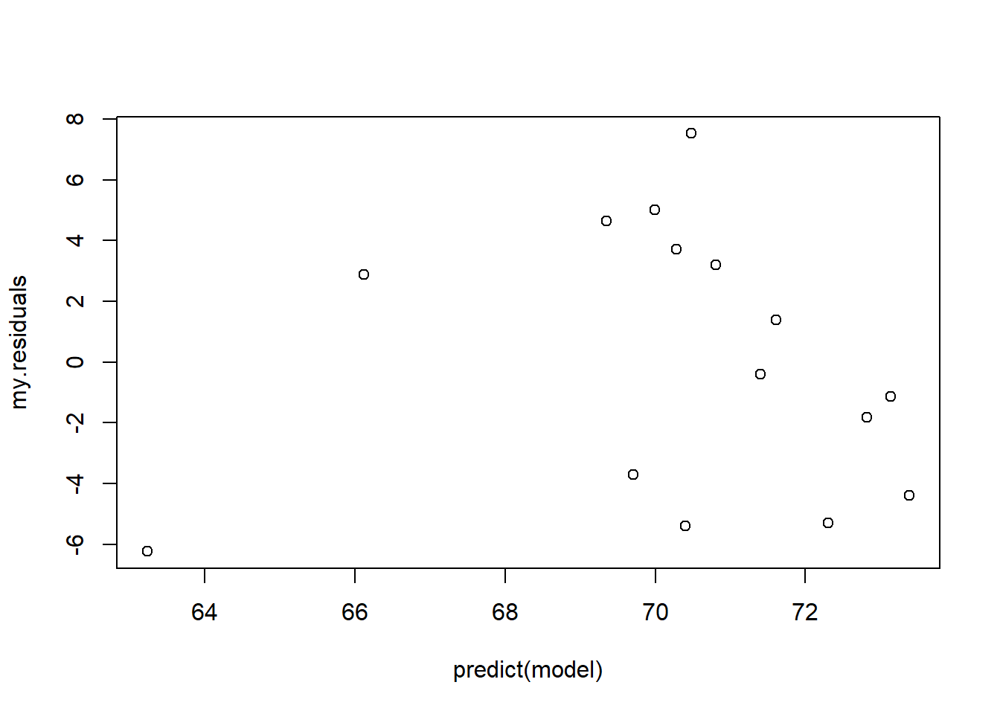
shapiro.test(my.residuals)##
## Shapiro-Wilk normality test
##
## data: my.residuals
## W = 0.96481, p-value = 0.7753Linear model
The true relationship between the response and predictor variables is linear!
Which one of the following plots violates this assumption?
layout(matrix(1:4,nrow=2,byrow = T))
plot(anscombe$y1~anscombe$x1,ylab="response",xlab="predictor")
plot(anscombe$y2~anscombe$x2,ylab="response",xlab="predictor")
plot(anscombe$y3~anscombe$x3,ylab="response",xlab="predictor")
plot(anscombe$y4~anscombe$x4,ylab="response",xlab="predictor")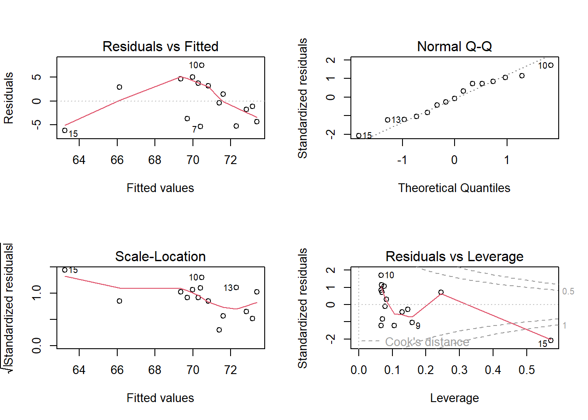
Independence of observations
Of course! All classical analyses make this assumption!
Equal variance (homoscedasticity, or lack of heteroscedasticity)
In simple linear regression, we assume that the model residuals are normally distributed– and that the spread of that distribution does not change as your predictor variable or response variable goes from small to large. That is, the residuals are homoskedastic – which means they have equal variance across the range of the predictor and response variables.
Let’s look at the sea turtle example:
my.residuals <- model$residuals
my.standardized.residuals <- rstandard(model) # even better...
plot(my.residuals~predict(model)) # plot residuals against fitted values
# plot(my.standardized.residuals~predict(model))Do you see any evidence for heteroskedasticity? Heteroskedasticity means non-homogeneity of variance across the range of the predictor variable. Serious violations of the equal variance assumption may warrant a transformation of your data, or you may choose to use an alternative analysis like a generalized linear model.
Predictor variable is known with certainty
That is, the observed (e.g., measured) values for your predictor variable are correct and known with precision. In standard regression analyses, the randomness in linear regression is associated only with the response variable - and that randomness is normally distributed.
Diagnostic plots
Simple linear regression analyses are generally accompanied by ‘diagnostic plots’, which are intended to diagnose potential violations of key assumptions, or other potential pitfalls of regression.
When you use the ‘plot’ function in R to evaluate a model generated with the ‘lm’ function, R returns four diagnostic plots:
layout(matrix(1:4,2,byrow = T))
plot(model)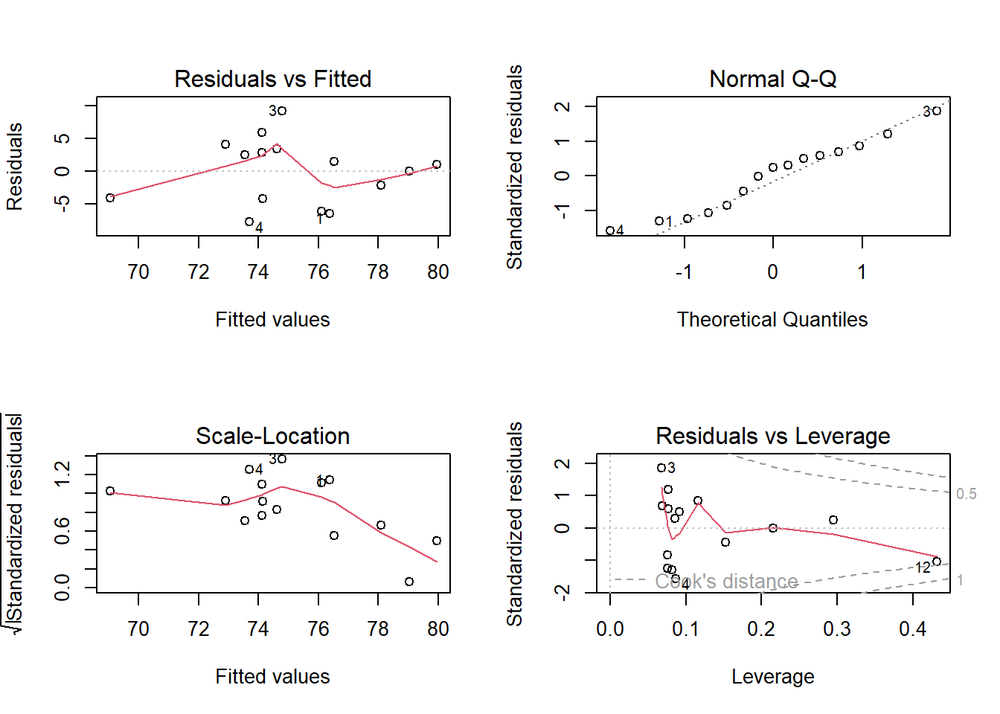
The first diagnostic plot (residuals vs fitted) lets you check for possible non-linear patterns. This plot should have no obvious pattern to it- it should look like random noise across the range of fitted values.
The second diagnostic plot (normal Q-Q) lets you check for normality of residuals. You already know how to do this.
The third diagnostic plot (scale-location) lets you check for homoskedasticity. This plot should have no obvious pattern to it- it should look like random noise across the range of fitted values.
The fourth diagnostic plot (residuals vs leverage) lets you check to make sure your regression model isn’t driven by a few influential points. Look for points that fall far to the right of the other points- these are high leverage points. Also look specifically at the upper and lower right hand side of this figure- points in these regions (with large values for “Cook’s distance”) have the property that if they were removed from the analysis the results would change substantially.
These four figures, taken together, should be a guide to interpreting how robust your regression is. Analyze these plots and make decisions about what you’re willing to accept.
Influential points
Which of the following plots has a highly influential point?
layout(matrix(1:4,nrow=2,byrow = T))
plot(anscombe$y1~anscombe$x1,ylab="response",xlab="predictor")
plot(anscombe$y2~anscombe$x2,ylab="response",xlab="predictor")
plot(anscombe$y3~anscombe$x3,ylab="response",xlab="predictor")
plot(anscombe$y4~anscombe$x4,ylab="response",xlab="predictor")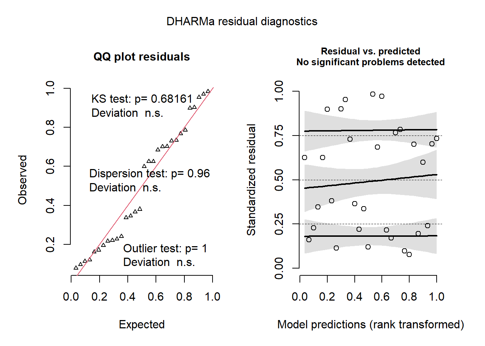
Can you try to draw a regression line if this point was removed?
Performance evaluation
R-squared
The coefficient of determination, also known as R-squared, is a statistic that is commonly used to indicate the performance of a regression model. Specifically, R-squared tells you how much of the total variance in your response variable is explained by your predictor variable. The maximum value for R-squared is 1- values close to 1 indicate a very “good” model! An R-squared of zero indicates that the model with the predictor variable is no better than a model that simply predicts the overall mean of the response variable no matter what the predictor variable is.
R-squared can be computed as:
\(R_2 = 1-\frac{SS_{res}}{SS_{tot}}\)
where \(SS_{tot} = \sum(y_i-\bar{y})^2\) and \(SS_{res} = \sum(y_i-y_{pred})^2\).
In the model summary output for lm() objects in R, you
will see an R-squared value, and also an “adjusted R-squared” value.
This is only valuable for multiple linear regression. The adjusted
R-squared value represents the proportion of variance in your response
variable that is explained by “significant” predictor variables. If you
include a bunch of meaningless predictor variables, the overall R2 will
still go up (some of the variation in your data will be “explained” by
the meaningless noise). The adjusted R-squared corrects for this
effect!
Regression outcomes
Let’s explore some possible outcomes of linear regression:
Try to come up with scenarios (with plots) for each of the following:
- Non-significant p, high R2
- Significant p, low R2
- Significant p, high R2
- Non-significant p, low R2
Multiple linear regression
Multiple, or multi-variable, linear regression simply refers to the case where you have more than one predictor variable.
NOTE: avoid using the term ‘multivariate’ because that often refers to the case where you have multiple response variables.
Linear regression vs correlation
When you run a simple linear regression you are assuming that one variable is your response variable and the other variable is a predictor variable. You are essentially modeling only one of these variables (the response) as a random variable and the other (the predictor variable) as a set of fixed values (a fixed effect).
Assessing correlation in R
In R you can use the cor function (part of base R) to
assess correlation. To run a correlation test (assess if the correlation
is ‘significant’) you can use the ‘cor.test’ function. By default, the
cor.test() function runs a Pearson correlation test, which
is a parametric test that assumes both variables are normal, no
outliers, etc. If you want you can run a non-parametric version- the
Spearman’s correlation (or Kendall’s tau).
## load the 'mtcars' data set
data(mtcars)
## define which variables to assess correlation for.
myvars <- c("disp","hp","wt")
## grab only the variables of interest
mtcars.reduced <- mtcars[,myvars]
## compute (pearson) correlations for all pairs of variables (correlation matrix)
cor.mat <- cor(mtcars.reduced)
cor.mat## disp hp wt
## disp 1.0000000 0.7909486 0.8879799
## hp 0.7909486 1.0000000 0.6587479
## wt 0.8879799 0.6587479 1.0000000## visualize correlations with the 'pairs' function
pairs(mtcars.reduced)
## run a correlation test- with 95% confidence interval
# default is Pearson product-moment correlation.
cor.test(mtcars$disp,mtcars$wt)##
## Pearson's product-moment correlation
##
## data: mtcars$disp and mtcars$wt
## t = 10.576, df = 30, p-value = 1.222e-11
## alternative hypothesis: true correlation is not equal to 0
## 95 percent confidence interval:
## 0.7811586 0.9442902
## sample estimates:
## cor
## 0.8879799## now try a non-parametric version
cor.test(mtcars$disp,mtcars$wt, method = "kendall") # or spearman## Warning in cor.test.default(mtcars$disp, mtcars$wt, method = "kendall"): Cannot
## compute exact p-value with ties##
## Kendall's rank correlation tau
##
## data: mtcars$disp and mtcars$wt
## z = 5.9278, p-value = 3.07e-09
## alternative hypothesis: true tau is not equal to 0
## sample estimates:
## tau
## 0.7433824If we were running a multiple linear regression with these variables as predictor variables, we might be somewhat concerned about multicollinearity. What is that, you ask?
Multicollinearity (for multiple linear regression)
If you have multiple predictor variables, you should first check that your predictor variables are not too correlated with one another. If the correlation between all pairs of quantitative covariates is less than around 0.7 or 0.8 you should generally not have a big problem with multicollinearity (although you might still check your variance inflation factors!). If you have a major problem with multicollinearity, you should generally use only one variable out of every pair of highly correlated variables for your final model.
You might also consider “penalized regression” approaches like ‘ridge regression’ or ‘lasso regression’. This, however, is outside the scope of this class!
Variance Inflation Factors
Variance Inflation Factors (VIFs) are a diagnostic tool to help you evaluate if you have a multicollinearity problem. In general VIFs less than 4 are considered okay. On the other hand, VIFs greater than 5 or 10 indicate serious problems!
To compute variance inflation factors, you can use the ‘vif’ function in the ‘car’ package. Let’s try this using the trees dataset!
########
# load the car package
library(car)
#######
# load the trees dataset
data(trees)
######
# visualize relationships among predictor vars
pairs(trees[,c("Girth","Height")])
######
# check for correlation in predictor variables
cor(trees[,c("Girth","Height")]) # predictor variables not highly correlated## Girth Height
## Girth 1.0000000 0.5192801
## Height 0.5192801 1.0000000# run a multiple regression model
my.mod <- lm(Volume~Girth+Height,data=trees)
# check variance inflation factors
car::vif(my.mod)## Girth Height
## 1.36921 1.36921Here it looks like we don’t have to worry!
What about if we use the ‘mtcars’ dataset? It seemed there were stronger correlations among predictor variables in that case!
########
## mtcars multicollinearity example
mymod <- lm(mpg~disp+hp+wt,data=mtcars)
vif(mymod)## disp hp wt
## 7.324517 2.736633 4.844618Now we are in the danger zone, and we might consider reducing our set of variables. First we might find our most highly correlated pair of variables and eliminate one of these!
cor(mtcars.reduced)## disp hp wt
## disp 1.0000000 0.7909486 0.8879799
## hp 0.7909486 1.0000000 0.6587479
## wt 0.8879799 0.6587479 1.0000000## let's remove the 'disp' variable and keep weight...
mymod <- lm(mpg~hp+wt,data=mtcars)
vif(mymod)## hp wt
## 1.766625 1.766625Looks much better now!!!
What if assumptions are violated?
Let’s look at what to do if some of the basic assumptions of linear regression are violated?
Non-linearity
If we suspect a non-linear functional relationship between our response and predictor variables, we might perform a non-linear regression analysis.
We can perform a non-linear regression using the “nls” function in R (for non-linear least squares). Let’s use the “DNase” dataset in R to explore this.
# ?nls
data(DNase)
plot(DNase$density~DNase$conc) # looks non-linear!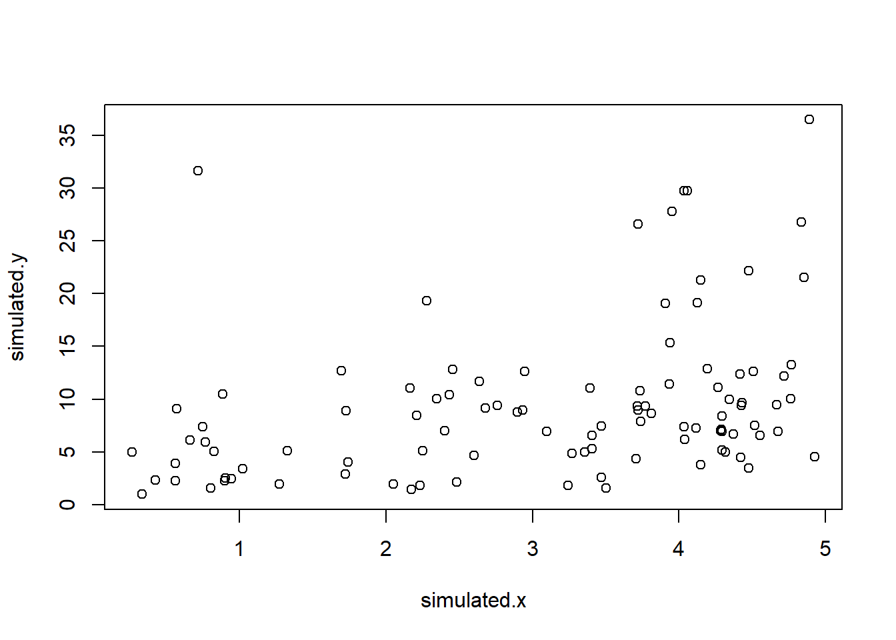
### run linear regression model
model1 <- lm(density~conc,data=DNase)
### run diagnostic plots
par(mfrow=c(2,2))
plot(model1) # clear non-linearity (and non-normal residuals, and heteroskedasticity!)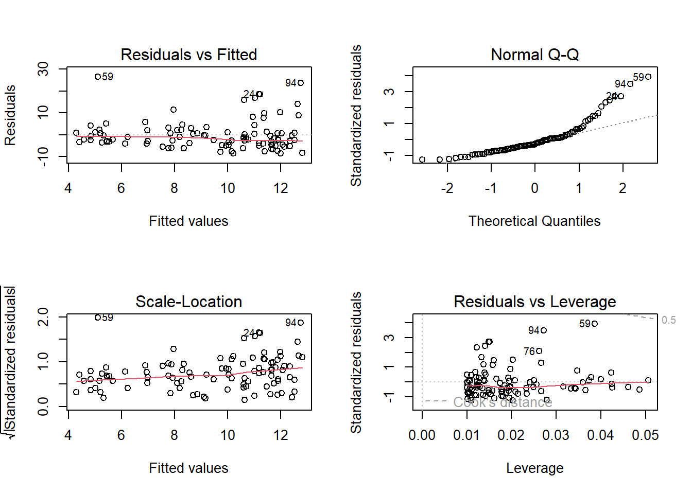
par(mfrow=c(1,1)) # plot data with regression line - obvious issues!
plot(DNase$density~DNase$conc)
abline(model1)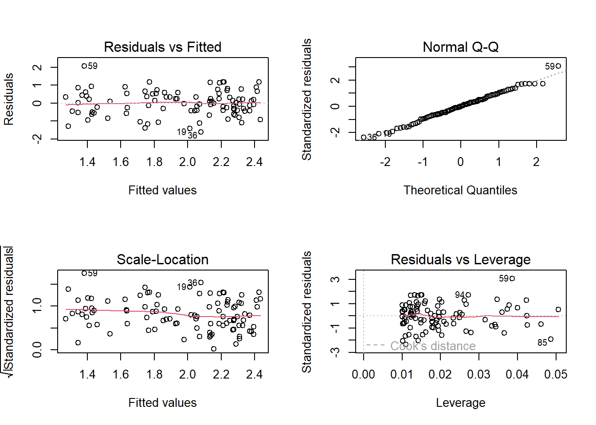
### run non-linear regression model - use saturation curve
model2 <- nls(density ~ (max*conc)/(K+conc),data=DNase,start=list(max=2,K=1))
summary(model2)##
## Formula: density ~ (max * conc)/(K + conc)
##
## Parameters:
## Estimate Std. Error t value Pr(>|t|)
## max 2.28032 0.02189 104.16 <2e-16 ***
## K 3.68241 0.08677 42.44 <2e-16 ***
## ---
## Signif. codes: 0 '***' 0.001 '**' 0.01 '*' 0.05 '.' 0.1 ' ' 1
##
## Residual standard error: 0.04909 on 174 degrees of freedom
##
## Number of iterations to convergence: 6
## Achieved convergence tolerance: 2.373e-06### run non-linear regression model - use logistic function
model3 <- nls(density ~ Asym/(1 + exp((xmid - log(conc))/scal)),
data = DNase,
start = list(Asym = 3, xmid = 0, scal = 1))
summary(model3)##
## Formula: density ~ Asym/(1 + exp((xmid - log(conc))/scal))
##
## Parameters:
## Estimate Std. Error t value Pr(>|t|)
## Asym 2.48532 0.06287 39.53 <2e-16 ***
## xmid 1.51812 0.06397 23.73 <2e-16 ***
## scal 1.09831 0.02442 44.98 <2e-16 ***
## ---
## Signif. codes: 0 '***' 0.001 '**' 0.01 '*' 0.05 '.' 0.1 ' ' 1
##
## Residual standard error: 0.04687 on 173 degrees of freedom
##
## Number of iterations to convergence: 6
## Achieved convergence tolerance: 4.739e-07plot(DNase$density~DNase$conc)
abline(model1)
concs.toplot <- seq(0.01,14,0.1)
densities.toplot <- predict(model2,newdata=data.frame(conc=concs.toplot))
lines(concs.toplot,densities.toplot,col="blue")
densities.toplot <- predict(model3,newdata=data.frame(conc=concs.toplot))
lines(concs.toplot,densities.toplot,col="red")
legend("topleft",lty=c(1,1,1),col=c("black","blue","red"),legend=c("linear",
"saturation","logistic"))
You can run residual plots with non-linear regression just like you can with ordinary linear regression:
## residual plots
resids <- DNase$density-predict(model3)
residuals(model3) # alternative method! This works for 'lm' objects as well (and many other model objects)## [1] -0.0222835640 -0.0212835640 -0.0124539463 -0.0094539463 -0.0335367172
## [6] -0.0245367172 -0.0380629138 -0.0410629138 -0.0662506055 -0.0712506055
## [11] -0.0115300720 -0.0295300720 -0.0853516109 -0.0553516109 -0.0458016613
## [16] -0.0658016613 0.0057164360 0.0107164360 0.0035460537 -0.0104539463
## [21] -0.0145367172 -0.0325367172 -0.0140629138 -0.0320629138 -0.0082506055
## [26] 0.0007493945 0.0854699280 0.0474699280 0.1346483891 0.1066483891
## [31] 0.1561983387 0.1381983387 0.0307164360 0.0287164360 0.0395460537
## [36] 0.0315460537 0.0374632828 0.0084632828 0.0189370862 0.0109370862
## [41] 0.0227493945 0.0087493945 0.0364699280 0.0464699280 0.2096483891
## [46] 0.0596483891 0.2271983387 0.1081983387 -0.0282835640 -0.0232835640
## [51] -0.0154539463 -0.0254539463 -0.0395367172 -0.0335367172 -0.0510629138
## [56] -0.0550629138 -0.0602506055 -0.0402506055 -0.0515300720 -0.0575300720
## [61] 0.0046483891 -0.0203516109 -0.0358016613 -0.0438016613 -0.0042835640
## [66] -0.0042835640 -0.0014539463 0.0015460537 -0.0155367172 -0.0195367172
## [71] -0.0300629138 -0.0250629138 -0.0222506055 -0.0332506055 0.0294699280
## [76] 0.0004699280 0.0056483891 -0.0103516109 -0.0258016613 -0.0378016613
## [81] 0.0467164360 0.0637164360 0.0575460537 0.0555460537 0.0324632828
## [86] 0.0374632828 0.0249370862 0.0109370862 0.0057493945 -0.0042506055
## [91] 0.0314699280 0.0414699280 0.0046483891 0.0396483891 -0.0078016613
## [96] 0.0301983387 0.0547164360 0.0527164360 0.0485460537 0.0485460537
## [101] 0.0424632828 0.0334632828 0.0289370862 0.0239370862 0.0057493945
## [106] -0.0122506055 0.0214699280 0.0044699280 -0.0103516109 -0.0273516109
## [111] -0.0168016613 -0.0368016613 0.0147164360 0.0147164360 0.0185460537
## [116] 0.0145460537 -0.0135367172 -0.0175367172 -0.0230629138 -0.0320629138
## [121] -0.0222506055 -0.0362506055 0.0124699280 -0.0285300720 0.0466483891
## [126] -0.0383516109 -0.0328016613 -0.0518016613 -0.0072835640 0.0037164360
## [131] 0.0085460537 0.0215460537 -0.0005367172 0.0024632828 0.0049370862
## [136] -0.0200629138 -0.0562506055 0.0247493945 0.0154699280 -0.0045300720
## [141] -0.0213516109 -0.0143516109 -0.0828016613 -0.0468016613 0.0127164360
## [146] 0.0547164360 0.0305460537 0.0325460537 0.0194632828 0.0164632828
## [151] 0.0239370862 0.0239370862 0.0097493945 0.0207493945 0.0114699280
## [156] 0.0444699280 -0.0793516109 -0.0133516109 -0.0768016613 -0.0678016613
## [161] 0.0077164360 0.0177164360 0.0255460537 0.0215460537 0.0064632828
## [166] 0.0124632828 0.0119370862 -0.0040629138 0.0237493945 0.0037493945
## [171] -0.0365300720 -0.0505300720 0.0016483891 -0.0343516109 -0.0608016613
## [176] -0.0548016613
## attr(,"label")
## [1] "Residuals"## check for normality
qqnorm(resids)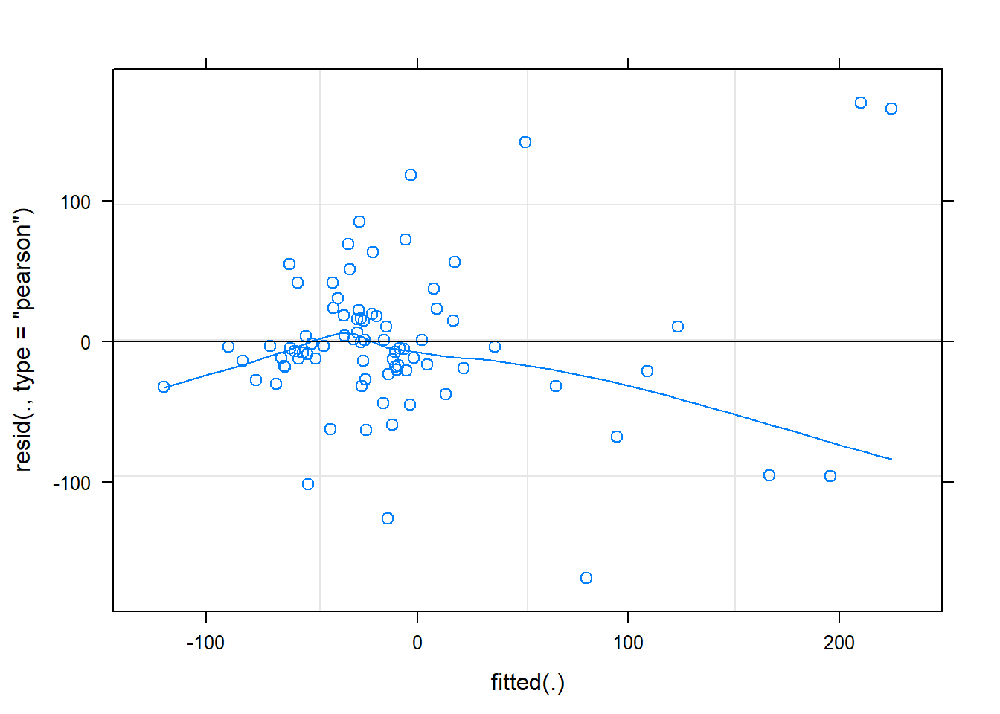
shapiro.test(resids)##
## Shapiro-Wilk normality test
##
## data: resids
## W = 0.90166, p-value = 1.978e-09## check for heteroskedasticity
plot(resids~predict(model3))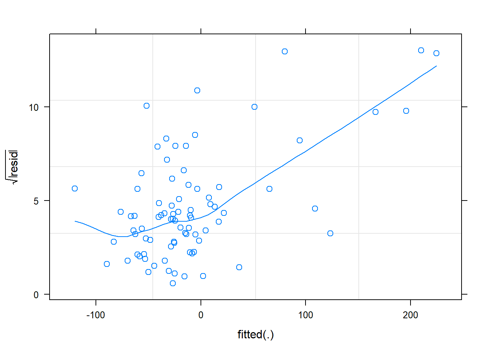
Heteroskedasticity
If you have severely heteroskedastic residuals, you can sometimes run a transformation of your response variable that improves the situation.
Alternatively, you might run a generalized linear model (GLM) that doesn’t assume homoskedasticity (e.g., run a model that assumes the residuals are gamma distributed, or Poisson distributed). In a gamma or Poisson distribution, the residuals are expected to get larger as the expected mean value gets larger!
We will talk more about GLM in an upcoming lecture. But for now, let’s run an example with a transformed response variable:
##########
# heteroskedasticity
##### first, simulate data with heteroskedastic residuals
simulated.x <- runif(100,0.1,5)
simulated.y <- exp(rnorm(100,1.1+0.3*simulated.x,0.7))
plot(simulated.y~simulated.x)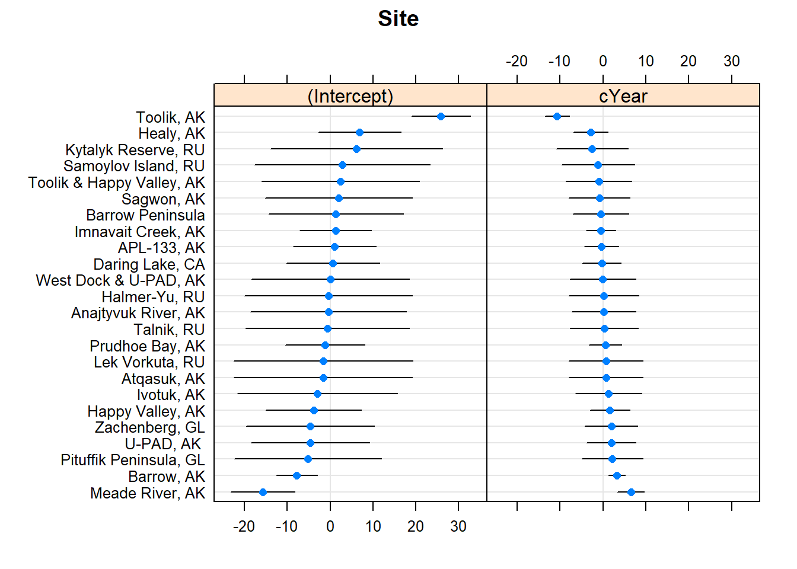
### run linear model
model1 <- lm(simulated.y~simulated.x)
par(mfrow=c(2,2))
plot(model1) # run diagnostic plots heteroskedasticity issues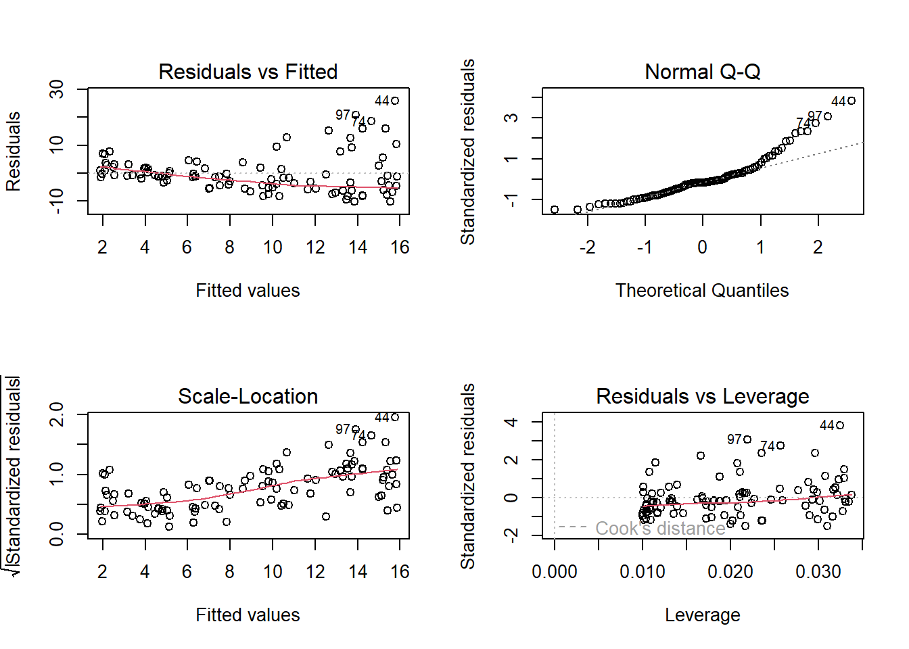
### Take a minute to test for normality of residuals!
### run linear model with log transformation of response variable
model2 <- lm(log(simulated.y)~simulated.x)
par(mfrow=c(2,2))
plot(model2) # run diagnostic plots - no issues! 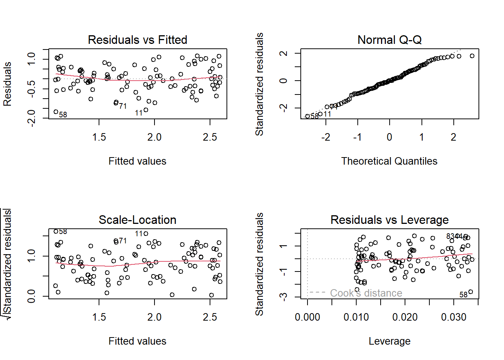
Non-independence of observations
If you have a known source of non-independence in your observations, you can try to thin (rarefy) your data by throwing away non-independent observations (e.g., keeping only one out of every set of known non-independent observerations).
There are also more advanced regression models that explicitly account for sources of non-independence:
Regression with phylogenetic correction – use this if phylogenetic relatedness among your sampling units is the main source of non-independence
Autoregression (more generally, ARIMA-type time series modeling) – use this if the main source of non-independence is temporal- observations taken closer together in time are more likely to be related
Spatial autoregression (more generally, spatial regression models) – use this if the main source of non-independence is spatial – observations taken closer together in space are more correlated.
These models are outside the scope of this class, but it’s useful to know they exist!
Non-normality of residuals
First of all, regression analysis is somewhat robust to non-normality of the residuals- due to the CLT!
But if your residuals are highly non-normal AND you can’t seem to correct this using non-linear regression, transformations, or GLM, you might need to use a non-parametric alternative.
One such alternative is to run a non-parametric correlation analysis such as a Spearman rank correlation test.
Regression and ANOVA
Before we move on to ANOVA, I just wanted to point out the essential similarity between regression and ANOVA. The only difference between regression and ANOVA is that in regression, the response variable is numeric/continuous and in ANOVA your response variable(s) is categorical.
How similar are regression and ANOVA? Well, we can fit regression and ANOVA models with the ‘lm’ functions, the assumptions are essentially the same, and the diagnostic plots are essentially the same.
There are differences- we will touch on this in the next lecture- but for now let’s focus on the similarities. Let’s run an ANOVA in R using the same approaches we have just learned for linear regression!
In this example we will use the famous iris dataset.
#### ANOVA as regression example
data(iris) # load the iris dataset
plot(iris$Sepal.Length ~ iris$Species) # r uses a boxplot by default for categorical predictor
my.mod <- lm(Sepal.Length~Species,data=iris) # run an ANOVA!
summary(my.mod) # look at the results##
## Call:
## lm(formula = Sepal.Length ~ Species, data = iris)
##
## Residuals:
## Min 1Q Median 3Q Max
## -1.6880 -0.3285 -0.0060 0.3120 1.3120
##
## Coefficients:
## Estimate Std. Error t value Pr(>|t|)
## (Intercept) 5.0060 0.0728 68.762 < 2e-16 ***
## Speciesversicolor 0.9300 0.1030 9.033 8.77e-16 ***
## Speciesvirginica 1.5820 0.1030 15.366 < 2e-16 ***
## ---
## Signif. codes: 0 '***' 0.001 '**' 0.01 '*' 0.05 '.' 0.1 ' ' 1
##
## Residual standard error: 0.5148 on 147 degrees of freedom
## Multiple R-squared: 0.6187, Adjusted R-squared: 0.6135
## F-statistic: 119.3 on 2 and 147 DF, p-value: < 2.2e-16anova(my.mod) # produce an analysis of variance table## Analysis of Variance Table
##
## Response: Sepal.Length
## Df Sum Sq Mean Sq F value Pr(>F)
## Species 2 63.212 31.606 119.26 < 2.2e-16 ***
## Residuals 147 38.956 0.265
## ---
## Signif. codes: 0 '***' 0.001 '**' 0.01 '*' 0.05 '.' 0.1 ' ' 1####
# alternative!
my.mod <- aov(Sepal.Length~Species,data=iris) # same model!!
summary(my.mod) # but produces an anova table by default## Df Sum Sq Mean Sq F value Pr(>F)
## Species 2 63.21 31.606 119.3 <2e-16 ***
## Residuals 147 38.96 0.265
## ---
## Signif. codes: 0 '***' 0.001 '**' 0.01 '*' 0.05 '.' 0.1 ' ' 1